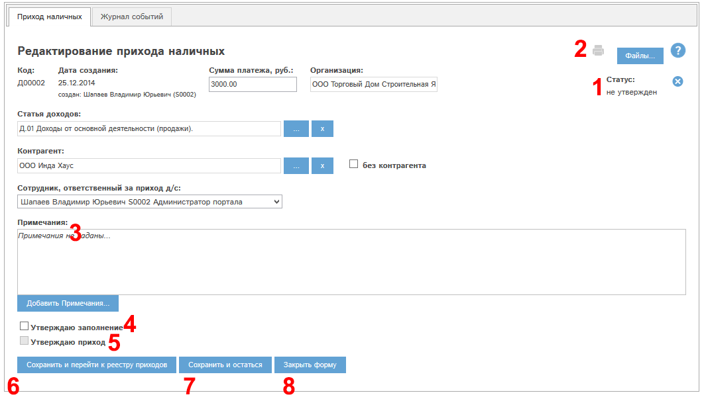
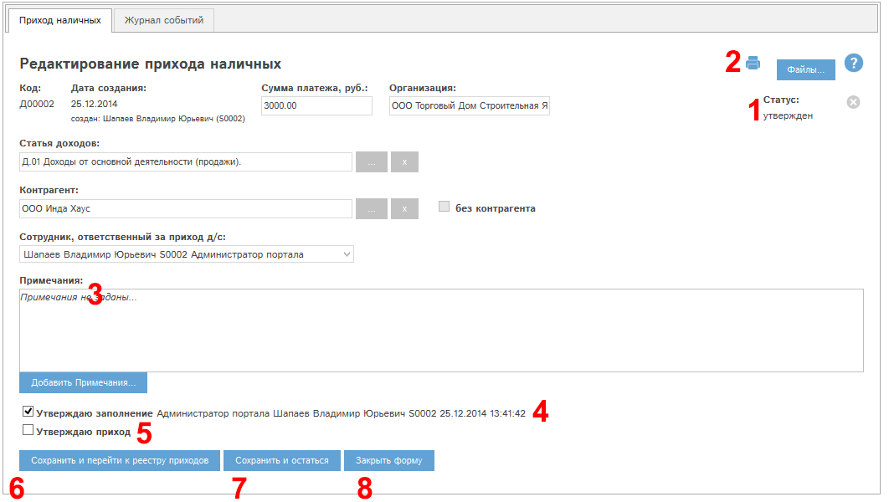
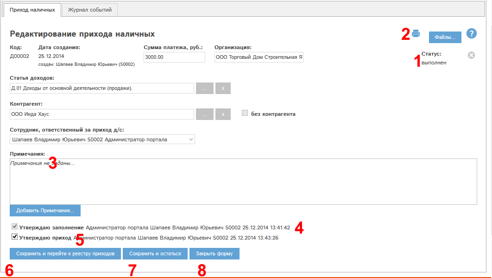

Рис. 5.52 Окно просмотра/редактирования прихода наличных
Рассмотрим блоки окна редактирования прихода наличных.
Блок «статус» – на Рис. 5.52 имеет значение «не утвержден». У каждого прихода в данном блоке указан его статус.
Статус прихода меняется следующим образом:
- Приход создали, но не утвердили – статус «не утвержден».
- Утвердили заполнение – статус «утвержден».
- Утвердили приход - статус "выполнен".
- Аннулировали приход (только из статуса «не утвержден») – статус «Аннулирован».
Блок (3) – Примечания полностью аналогичен блоку «Примечания» в разделе Просмотр и редактирование заявки.
Утверждаю заполнение (4) – при наличии у Вас прав Вы можете утвердить заполнение по приходу наличных.
Утвердим заполнение. Для этого необходимо проставить этот флаг и нажать кнопку «Сохранить и остаться» (7).
Данное действие так же возможно провести при наличии прав из реестра приходов. Для этого служит кнопка «утвердить» в колонке «Утверждение заполнения».
При утверждении заполнения приход наличных переходит в статус «утвержден».
Редактирование прихода в статусе «утвержден» невозможно!
Для редактирования прихода необходимо снять это утверждение!
У прихода из нашего примера утвердили заполнение. Окно просмотра прихода наличных выглядит следующим образом:

Рис. 5.54 Окно просмотра/редактирования прихода наличных после утверждения заполнения.
Становится доступной кнопка  - печать прихода.
- печать прихода.
Для проведения прихода наличных необходимо утвердить приход суммы. Для этого (при наличии у Вас прав на это действие) необходимо проставить галочку "Утверждаю приход" (5) и нажать "Сохранить и остаться" (7).
У прихода из нашего примера утвердили приход. Окно просмотра прихода наличных выглядит следующим образом:

Рис. Окно просмотра/редактирования прихода наличных после утверждения прихода.
Приход наличных переходит в статус "выполнен".